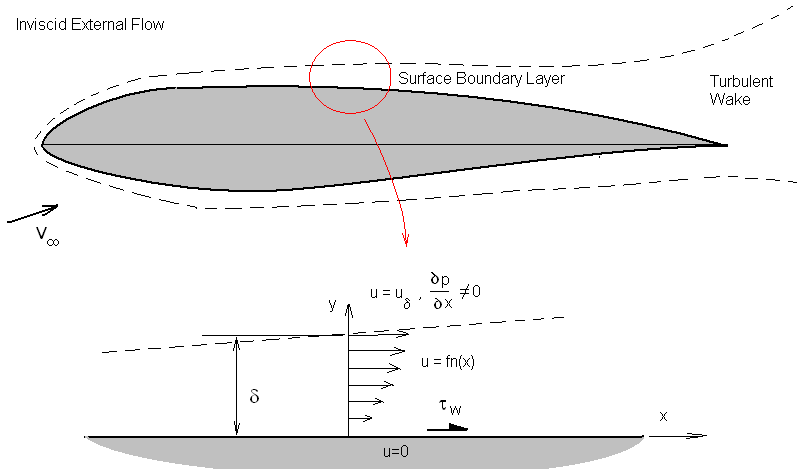
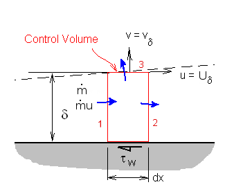
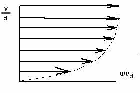
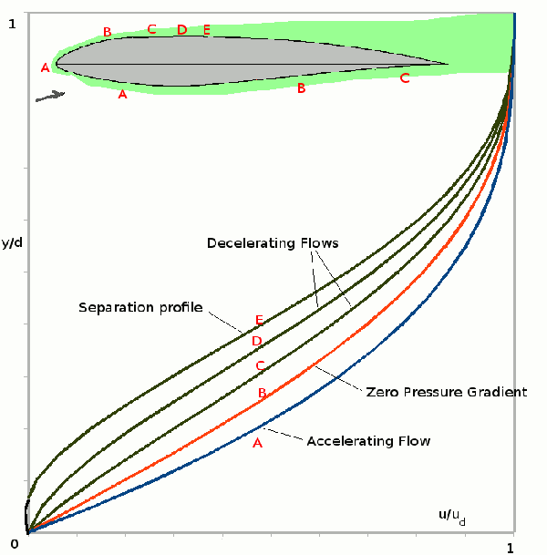
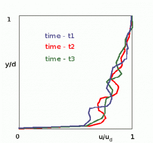
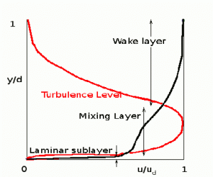
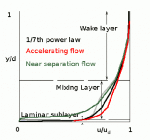
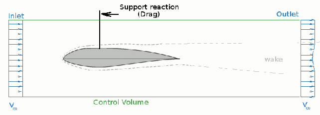

2D BOUNDARY LAYER MODELLING
The analysis of an aerofoil's boundary layer can be done as an extension of the results for a simple flat plate. Effects due to surface curvature and angular acceleration around leading edge can be lumped into a single parameter, the input definition of pressure gradient distribution along the surface. The geometric model is simplified to a flat surface with the pressure gradient and velocity distribution that has been obtained for section inviscid flow analysis.

The height of the boundary layer $δ$ can be estimated as the point
where $u = 0.99 x U_δ$. Here $U_δ$ is the
velocity of the inviscid flow field outside the viscous boundary layer.
In this analysis $U_δ$ is obtained from the previous potential
flow panel method solution as the tangential surface velocities on the surface
of each of the panels.
${∂P}/{∂x}$ is the pressure gradient along the aerofoil surface
(assuming static pressure $P$ is constant through the depth of the boundary layer).
$τ_w$ is the shear stress on the surface due to friction with the air
flow.
$P=P_0+1/2ρU_δ^2$ for the inviscid external flow where $P_O$ is
the stagnation pressure of the flow.
For incompressible flows the stagnation pressure is constant so that
$${∂P}/{∂x}=-ρU_δ{∂U_δ}/{∂x}$$
The governing equations for this simple one-dimensional flow model can be
found by applying the laws of conservation of mass and momentum to a unit
depth control volume covering the boundary layer.

Conservation of mass : $∑{dm}/{dt}=0$
Conservation of momentum : $∑{dm}/{dt}u = ∑F_x$
Mass and Momentum flow will occur at the three free surfaces (1) , (2) and (3) of the control volume.
$${{dm}/{dt}}_1=∫_0^δρu.dy$$
$${{dm}/{dt}}_2=-∫_0^δ(ρu+{∂ρu}/{∂x}dx).dy$$
$${{dm}/{dt}}_3=-ρv_δ.dx$$
Thus
$$∫_0^δ{∂ρu}/{∂x}.dx.dy=-ρv_δ.dx$$
The momentum balance will be,
$$∑{dm}/{dt}u=-({dm}/{dt}u)_1+({dm}/{dt}u)_2+({dm}/{dt}u)_3$$
$$∑{dm}/{dt}u=∫_0^δ(ρu^2+{∂ρu^2}/{∂x}.dx).dy-∫_0^δρu^2.dy+ρU_δv_δ.dx$$
The horizontal forces on the control volume will come from pressure on side 1 and side 2 and shear stress from the surface.
$$∑F_x= Pδ-(P+{∂P}/{∂x})δ-τ_wdx$$
Equating momentum change to applied forces give
$$\table ρU_δv_δdx+∫_0^δ{∂ρu^2}/{∂x}.dx.dy, =, -{∂P}/{∂x}δx-τ_w dx; , =, ρU_δ{∂U_δ}/{∂x}δdx-τ_wdx$$
Using the conservation of mass result to substitute for $v_δ$ and cancelling element length dx gives,
$$-U_δ∫_0^δ{∂ρu}/{∂x}.dy + ∫_0^δ{∂ρu^2}/{∂x}.dy = ρU_δ{∂U_δ}/{∂x}δ-τ_w$$
The velocity profile of the layer can be further processed by defining terms
specific to its size, displacement effect and momentum loss.
Boundary layer thickness,
$δ=∫_0^δ.dy$
Displacement effect or lost mass flow,
$δ^{\text"*"}=∫_0^δ(1-{ρu}/{ρ_δU_δ}).dy$
Momentum loss in profile,$θ=∫_0^δ{ρu}/{ρ_δU_δ}(1-{ρu}/{ρ_δU_δ}).dy$
and wall shear stress, $τ_w=(μ{∂u}/{∂y})_{y→0}$
These definitions are applied to low speed incompressible flow where ρ is constant through the boundary layer.
If the above momentum equation is divided by external momentum, $ρu_δ^2$ and the above profile definitions
are substituted in, then the following form is obtained,
$${∂θ}/{∂x}+{(2θ+δ^{\text"*"})}/{U_δ}{∂U_δ}/{∂x}-τ_w/{ρU_δ}=0$$
In practice a boundary layer shape factor, $H=δ^{\text"*"}/θ$, can be defined.
Its values do not vary greatly and this can be used to simplify the solution methods.
$${∂θ}/{∂x}+{(2+H)}θ/{U_δ}{∂U_δ}/{∂x}-τ_w/{ρU_δ}=0$$
The solution of this approximately linear differential equation can be found by starting with initial conditions at the stagnation point and then integrating along the surface in small steps, dx, to find the momentum loss at any point. To simplify calculations, curvature of the aerofoil surface is ignored and assumed polynomial shapes for the boundary layer profile are used to predict local expressions for δ, δ*, θ and τw.
Laminar boundary layer.
Initially the flow will be laminar. An exact solution with zero pressure gradient has been predicted by Blassius, so the expected shape for the aerofoil flow will be based on a polynomial fit to this solution, plus an addition term to handle the pressure gradient effect.
$$u/U_δ=2η-2η^2+η^4+η/6(1-η^3)Λ$$
where $η=y/δ$ and $Λ=δ^2 ρ/μ{∂U_δ}/{∂x}$
with
Λ = 7.052 at the stagnation point,
Λ > 0 for accelerating flow,
Λ = 0 when there is no pressure gradient (Blassius solution),
Λ < 0 for decelerating flow and
Λ = -12 where the boundary layer flow starts to separate.
Boundary layer shapes will then appear as shown in the following figure and will depend on their location along the section and the local pressure gradient (velocity gradient).

By integration and differentiation of the polynomials for this family of profiles, the boundary layer parameters can be found,
$$δ^{\text"*"}/δ=0.3 - Λ/120$$
$$θ/δ={37}/{315}-Λ/{945}-Λ^2/{9072}$$
$$τ_w/{ρU_δ^2}=μ/{ρU_δδ}(2+Λ/6)$$
Substituting these expressions into the boundary layer momentum
equation and assembling terms with $θ$ as the primary variable leads to,
$${ρU_δ}/μ {∂θ^2}/{∂x}+6{ρθ^2}/μ{∂U_δ}/{∂x}-0.47=0$$
multiplying the equation by $U_δ^5$ gives,
$$ρ/μU_δ^6{∂θ^2}/{∂x}+6 U_δ^5{ρθ^2}/μ{∂U_δ}/{∂x}=0.47U_δ^5$$
or
$$ρ/μ{∂(θ^2U_δ^6)}/{∂x}=0.47U_δ^5$$
which can be integrated with respect to x to obtain a solution along the boundary layer.
$$ρ/μ∫d(U_δ^6θ^2)=0.47∫U_δ^5 .dx$$
This integration can be performed from the stagnation point to any
position on the aerofoil surface. The conditions at the stagnation point are
$U_δ=0$ and $θ=0$, so the result of the integration becomes,
$$ρ/μU_δ^6θ^2=0.47∫_0^xU_δ^5 .dx$$
or
$$θ^2=0.47μ/ρ1/U_δ^6∫_0^xU_δ^5 .dx$$
and in non-dimensional form,
$${Re}_θ^2=Re {0.47}/({U_δ/V_∞})^4 ∫_0^{x/c}(U_δ/V_∞)^5 .{dx}/c$$
where Reynolds number based on momentum loss is
$${Re}_θ={ρθU_δ}/μ$$
Applying the previous assumptions of profile shape, including
some curve fitting of the variables gives the other boundary layer parameters
at this point $x$,
$$H=δ^{\text"*"}/θ=2.61-3.75 K+5.24 K^2\text" for "0<K<0.1$$
$$H=2.088+{0.731}/{K+0.14}\text" for "-0.1<K<0$$
where
$$K=ρ/μθ^2{∂U_δ}/{∂x}=(θ/δ)^2 Λ$$
In most cases the boundary layer does not remain laminar all the way to the trailing edge, so this solution only gives momentum loss up to the point where instability sets in and the boundary layer becomes turbulent.
Transition
At low angles of attack, transition is usually caused by the growth of natural instabilities at high Reynolds number and by the onset of an adverse pressure gradient.
An empirical prediction of this effect has been obtained by Michel, such that transition occurs when,
$${Re}_θ>1.174(1+22400/{{Re}_x}){Re}_x^0.46$$
At higher angles, with sudden adverse pressure gradients, the
laminar boundary layer will start to separate causing a small bubble.
The shear flow over this bubble becomes unstable leading to turbulence and
a reattached boundary layer. This condition can be predicted by observing
when the boundary layer reaches a value of $Λ=-12$.
However it is difficult to assess whether a laminar bubble transition occurs or whether the laminar flow completely separates and stall occurs. This prediction is getting very close to the limit of application of this simple theory and care should be taken in its use.
Turbulent Boundary Layers
Once the surface layer becomes unstable the flow breaks up into random turbulence. The profile at a particular location is no longer fixed but varies with time. In this case profiles can only be analysed as time averages with an associated level of turbulence at each height.

Instantaneous velocities in turbulent layer at three separate times.

Time averaged velocity profile also showing variation of turbulence level through the layer.
The time average profile is itself rather complex with three distinct regions. At the bottom very close to the surface, is a laminar sublayer which is stable due to the low velocity but has a high shear. At the edge near the invisicid external flow is turbulent decay layer or wake like region and joining these two in the middle is a highly turbulent mixing layer.
For the purposes of our momentum solution we use an approximate polynomial fit to this complex shape,
$$u/U_δ=(y/δ)^{(H-1)\/2}$$
where the standard shape factor $H=δ^{\text"*"}\/θ$
is used. H is preset based on experimental data obtained from boundary layer
tests with various pressure gradients.
For zero pressure gradient
$H = 9/7$ so that a standard 1/7th power law profile is obtained. Using only
small H variations gives reasonable estimate of profiles for accelerating,
decelerating or near separation $H ≈ 2.6$ turbulent boundary layers.
Treating $H$ as a constant value and using the following experimental
prediction for shear stress in a turbulent layer,
$$τ_w/{ρU_δ^2}=0.246×10^{-0.678H}{Re}_θ^{-0.268}$$
applying the integration of the polynomial approximations for a turbulent layer, leads to a governing momentum equation that is then in a similar format to the one found for laminar flow,
$${∂(θ((ρ\/μ)θU_δ)^{0.2})}/{∂x}=0.0106-4/U_δ{∂U_δ}/{∂x}((ρ\/μ)θU_δ)^{0.2}$$
As in the case of the laminar layer, this turbulent layer equation can be solved by combining the
partial derivatives and then integrating.
$${Re}_θ^{6/5}={Re}_x {0.0106}/{(U_δ/V_∞)^3} ∫_{\text"transition"}^{x\/c}(U_δ/V_∞)^4 .{dx}/c$$
By adding the momentum loss of the turbulent layer to that already
found for the initial laminar layer, a final value of momentum loss can be
estimated for the flow over the surface of the aerofoil. This will include
the sum of both upper and lower surface momentum losses. The total momentum
loss over the surface of the section to the trailing edge will be called $θ_{te}$ at $x\/c = 1$.
Turbulent boundary layer separation is predicted when H reaches or exceeds
approximately $2.6$. If separation hasn't occurred then nominally the H value
at the trailing edge is $2.0$, so that $δ^{\text"*"}=2θ$ at the trailing edge.
Drag Coefficient
If momentum loss over the whole section is known then drag of the section
can be predicted.
Change of flow momentum
in-to/out-of the control volume is equal to the sum of the applied forces.
The control volume is extended downstream where the pressure influence of the
aerofoil is negligible so that outlet will have same stream static pressure
as the inlet. Thus the only applied force component will be the support force
to hold the section in place and thus will be equivalent to the drag, $D$, on the section.
The momentum balance will be,
$$-∫_{\text"in"}ρu^2.dA+∫_{\text"out"}ρu^2 .dA = -D$$
also conservation of mass must be obeyed so,
$$∫_{\text"in"}ρu.dA=∫_{\text"out"}ρu .dA$$
Combining these two results gives and setting the inlet velocity to a constant stream velocity,
$$D=V_∞∫_{\text"in"}ρV_∞.dA-∫_{\text"out"}ρu^2 .dA$$
$$D=V_∞∫_{\text"out"}ρu.dA-∫_{\text"out"}ρu^2 .dA$$
assuming incompressible 2D flow so that $dA=dy × 1$ (per unit span),
$$D=ρV_∞^2∫_{\text"out"}(u/V_∞)-(u/V_∞)^2 .dy$$
$$D=ρV_∞^2∫_{\text"out"}u/V_∞(1-(u/V_∞)) .dy$$
non-dimensionalising to obtain drag coefficient gives,
$$C_D=D/{1/2ρV_∞^2S}=2∫_{\text"out"}u/V_∞(1-u/V_∞) .{dy}/c$$
$$C_D=2 θ_{\text"wake"}/c$$
The section boundary layer prediction only gave a value of momentum loss up to the trailing edge. There is a small deficit between trailing edge and downstream wake due to the pressure imbalance at the trailing edge. The difference between trailing edge momentum loss and downstream wake momentum loss can be found by continuing the previous boundary momentum integration on downstream into the wake. The integral momentum equation is,
$${∂θ}/{∂x}+(2+H)θ/U_δ{∂U_δ}/{∂x}-τ_w/{ρU_δ} =0 $$
in the wake $τ_w=0$ and $H$ can be taken as approximately an
average of the trailing edge value $H=2$, and the far downstream value $H=1$,
the momentum equation then becomes,
$${∂θ}/{∂x}+7/2 θ/U_δ{∂U_δ}/{∂x}=0 $$
rearranging and integrating gives,
$$1/θ{∂θ}/{∂x}=-{7/2}1/U_δ{∂U_δ}/{∂x}$$
$$∫_{θ_{t.e.}}^{θ_{wake}} 1/θ .dθ = -{7/2}∫_{u_{t.e.}}^{V_∞}1/U_δ .dU_δ$$
$$\ln(θ_{wake})-\ln(θ_{t.e.})=-{7/2}(\ln(V_∞)-\ln(u_{t.e.}))$$
$$θ_{wake}=θ_{t.e.}(u_{t.e.}/V_∞)^{7/2}$$
The $7\/2$ power is dependent on our assumptions of the final shape of the turbulent boundary layer at the trailing edge and the reader may wish to investigate more detailed options to improve the accuracy of the final drag coefficient prediction. The final drag coefficient prediction for the aerofoil section will be
$$C_D=2(θ_{t.e.}/c)(u_{t.e.}/V_∞)^{7/2}$$
Back to Top